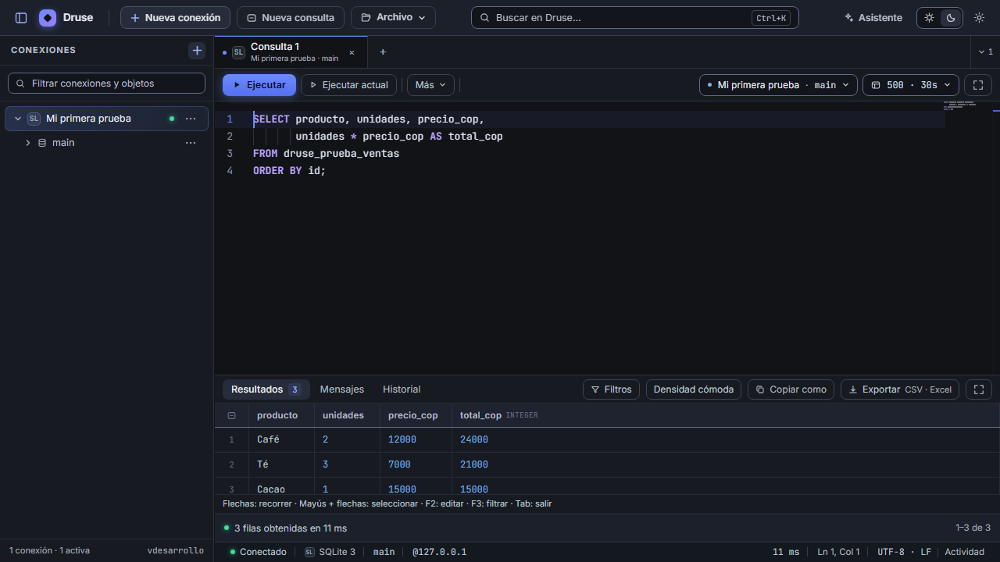

DIEZ MINUTOS · DATOS FICTICIOS
Tu primera consulta con SQLite.
Crea una base de ejemplo, consulta tres ventas y exporta el resultado. No necesitas un servidor de bases de datos, .NET ni Node.js.
1. Descarga e instala
Abre la release oficial
y descarga Druse-Comunidad-1.3.0-beta.1-win-x64-setup.exe y
SHA256SUMS.txt. Puedes comprobar el archivo en PowerShell desde la carpeta de descarga:
Get-FileHash -LiteralPath '.\Druse-Comunidad-1.3.0-beta.1-win-x64-setup.exe' -Algorithm SHA256El resultado debe coincidir con la entrada del instalador en SHA256SUMS.txt.
Esto comprueba la integridad; no sustituye a la firma del editor.
El instalador puede necesitar conexión para obtener Microsoft Edge WebView2.
Si Windows o tu organización bloquean la instalación, puedes reportarlo y detener la prueba.
2. Crea una base vacía
- Abre Druse y pulsa Nueva conexión. Elige SQLite.
- Escribe Mi primera prueba en Nombre.
- Junto a Archivo, pulsa Crear una nueva y guarda
druse-prueba.dben una carpeta de pruebas. Usa un nombre nuevo si ya existe. - Tras el aviso de base creada, pulsa Conectar. SQLite no pide servidor, usuario ni contraseña.
Comprueba que la pestaña SQL apunta a Mi primera prueba y a main. Si no es así, elige esa conexión y esa base en el selector del editor.
3. Carga el ejemplo y consulta
Abre el SQL de ejemplo, copia todo su contenido en el editor y pulsa Ctrl + Enter. Crea una tabla con tres ventas ficticias. Ejecútalo una sola vez en la base vacía. Si dice que la tabla ya existe, continúa con la consulta.
Reemplaza el texto del editor por esta consulta y vuelve a pulsar Ctrl + Enter:
SELECT producto, unidades, precio_cop,
unidades * precio_cop AS total_cop
FROM druse_prueba_ventas
ORDER BY id;Debes ver tres filas: Café → 24000, Té → 21000 y Cacao → 15000 en
total_cop. Para sumar las ventas, ejecuta por separado:
SELECT SUM(unidades * precio_cop) AS total_cop
FROM druse_prueba_ventas;El total esperado es 60000. Los importes son pesos enteros de ejemplo.

4. Exporta las tres ventas
Vuelve a ejecutar la primera consulta, la que muestra los tres productos. En los resultados, abre Exportar y elige CSV. Guarda el archivo y comprueba que contiene los tres productos y sus importes. Exportar vuelve a ejecutar la consulta original.
5. Cuéntanos cómo te fue
Sirven tanto las pruebas correctas como los fallos. Abre un informe de compatibilidad o escribe a druse.contacto@gmail.com.
- Versión: Druse Comunidad 1.3.0 beta.1; versión de Windows.
- Pasos completados: instalar, conectar, consultar, sumar y exportar.
- Qué esperabas, qué ocurrió y mensaje exacto si apareció un error.
- Si es tu primera prueba o ya habías usado Druse antes.
No incluyas contraseñas, rutas con datos personales ni información de clientes. Los informes de GitHub son públicos. Un correo se mantiene privado salvo que autorices su publicación.
Al terminar, desconecta la conexión de prueba. El archivo SQLite y el CSV quedan en las carpetas que elegiste. Puedes conservarlos para una segunda prueba.